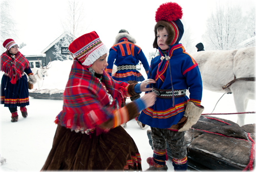
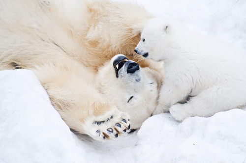

população
Cerca de 4 milhoẽs de pessoas vivem atualmente no Ártico,das quais cerca de 10% são povos indigenas,com dezenas diferentes culturas e linguas.Eles vivem em pequenos povoados principalmente em áreas costeiras.São sedentários e vivem em famílias,praticam a caça e a pesca (principais fontes de alimentação e renda.

Animais do Àrtico
A fauna do Círculo Polar Ártico, que faz toda e qualquer viagem valer a pena, vai muito além dos icônicos ursos-polares. Existem, inclusive, animais que habitam tanto o Ártico quanto a Antártida, entre eles, o camarão krill e a orca, que vivem em ambos os pólos.
são poucas as espécies de animais encontradas nessa região,como: coruja do Ártico,urso polar,boi almiscarado,andorinha do Àrtico...
